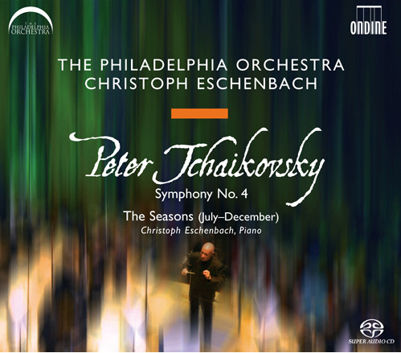

SACD
Symphony No. 4 / The Seasons (July-December)
Pyotr Ilyich Tchaikovsky - The Philadelphia Orchestra, Christoph Eschenbach
Media: NM · Sleeve: NM
CA$11.50
Discogs SuggestedCA$12.99
Discogs MedianCA$12.99
Discogs HighCA$12.99
- Physical Copy ID
- BB-SACD-161
- Year
- 2007
- Label
- Ondine
- Catalog #
- ODE 1104-5
- Country
- Europe
- Genre / Style
- Classical · Romantic